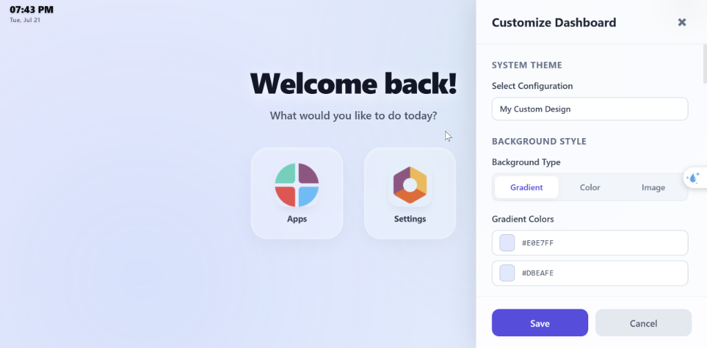

<!-- Google Fonts for premium typography -->
<link rel="preconnect" href="https://fonts.googleapis.com">
<link rel="preconnect" href="https://fonts.gstatic.com" crossorigin>
<link href="https://fonts.googleapis.com/css2?family=Outfit:wght@300;400;500;600;700;800&family=Plus+Jakarta+Sans:wght@300;400;500;600;700;800&display=swap" rel="stylesheet">

<section style="font-family: 'Plus Jakarta Sans', 'Outfit', Arial, sans-serif; color:#1e293b; max-width:1140px; margin:0 auto; padding: 20px 0; background: #ffffff;">

    <!-- Banner -->
    <div style="border-radius:24px; overflow:hidden; margin-bottom:40px; box-shadow:0 20px 50px rgba(79, 70, 229, 0.15); border: 1px solid rgba(79, 70, 229, 0.1);">
        
    </div>

    <!-- Title -->
    <div style="text-align:center; margin-bottom:24px;">
        <h1 style="font-family: 'Plus Jakarta Sans', sans-serif; font-size:42px; font-weight:800; margin:0 0 12px 0; color:#312e81; letter-spacing: -0.02em; line-height: 1.2;">Your Odoo. Your Look.</h1>
        <p style="font-family: 'Outfit', sans-serif; font-size:20px; color:#475569; max-width:800px; margin:0 auto; line-height:1.6; font-weight: 400;">
            Hoss Premium Home Menu Customizer replaces the fixed, one-size-fits-all Odoo Home Menu with one <strong>every user
            controls</strong> &mdash; background, colors, spacing, icons, greeting, and a live clock &mdash; adjusted in
            seconds, live, with zero code and zero XML.
        </p>
    </div>

    <div style="text-align:center; margin-bottom:56px;">
        <span style="display:inline-block; background:linear-gradient(135deg, #eef2ff, #e0e7ff); color:#4f46e5; font-weight:700; font-size:14px; letter-spacing:0.3px; padding:10px 24px; border-radius:999px; box-shadow: 0 4px 15px rgba(79, 70, 229, 0.05); font-family: 'Plus Jakarta Sans', sans-serif;">
            &#127912; The idea in one line: it's not a theme, it's a canvas &mdash; you decide what it looks like.
        </span>
        <p style="font-family: 'Outfit', sans-serif; font-size:20px; color:#475569; max-width:800px; margin:24px auto 0 auto; line-height:1.6; font-weight: 400;">
            Hoss Premium Home Menu Customizer replaces the fixed, one-size-fits-all Odoo Home Menu with one that grants <strong>maximum style control</strong> over the welcome screen &mdash; background, colors, spacing, icons, greeting, and a live clock &mdash; adjusted in seconds, live, with zero code and zero XML.
        </p>
    </div>

    <!-- Live Customizer Feature Showcase -->
    <div style="display:flex; flex-wrap:wrap; gap:32px; align-items:center; margin-bottom:64px; background:linear-gradient(135deg,#f5f7ff,#eff6ff); border-radius:24px; padding:40px; border: 1px solid rgba(99, 102, 241, 0.08); box-shadow: 0 10px 40px rgba(0, 0, 0, 0.02);">
        <div style="flex:1 1 360px;">
            <h2 style="font-family: 'Plus Jakarta Sans', sans-serif; font-size:26px; font-weight: 800; margin:0 0 16px 0; color:#1e1b4b; line-height: 1.3;">One click opens the customizer. Everything updates live.</h2>
            <p style="font-family: 'Outfit', sans-serif; font-size:16px; color:#475569; line-height:1.7; margin:0 0 24px 0;">
                Click the paint-brush icon in the top bar and a full visual panel slides in &mdash; offering maximum style control over the Home Menu/Welcome screen. No page reload, no waiting. Every change previews instantly on the real Home Menu behind it.
            </p>
            <ul style="margin:0; padding:0; list-style:none; font-size:15px; color:#334155; font-family: 'Outfit', sans-serif;">
                <li style="margin-bottom:12px; display:flex; gap:12px; align-items: center;">
                    <span style="font-size: 20px;">&#128396;</span> <strong>Background:</strong> Solid color, gradient, or your own image wallpaper
                </li>
                <li style="margin-bottom:12px; display:flex; gap:12px; align-items: center;">
                    <span style="font-size: 20px;">&#11036;</span> <strong>App icon size &amp; shape:</strong> Rounded, circular, or square shapes
                </li>
                <li style="margin-bottom:12px; display:flex; gap:12px; align-items: center;">
                    <span style="font-size: 20px;">&#129702;</span> <strong>Glass card opacity:</strong> Custom border, radius, color, and transparency
                </li>
                <li style="margin-bottom:12px; display:flex; gap:12px; align-items: center;">
                    <span style="font-size: 20px;">&#9997;</span> <strong>Greeting message:</strong> Title, subtitle, alignment, sizes, or rich HTML
                </li>
                <li style="display:flex; gap:12px; align-items: center;">
                    <span style="font-size: 20px;">&#128336;</span> <strong>Systray Clock:</strong> Live clock fully styled to match the selected theme
                </li>
            </ul>
        </div>
        <div style="flex:1 1 360px;">
            <div style="background:#ffffff; border-radius:24px; padding:28px; box-shadow:0 15px 35px rgba(0,0,0,0.05); border: 1px solid #e2e8f0;">
                <div style="display:flex; gap:8px; margin-bottom:20px; align-items: center;">
                    <span style="width:12px; height:12px; border-radius:50%; background:#ff5f56; display:inline-block;"></span>
                    <span style="width:12px; height:12px; border-radius:50%; background:#ffbd2e; display:inline-block;"></span>
                    <span style="width:12px; height:12px; border-radius:50%; background:#27c93f; display:inline-block;"></span>
                    <span style="margin-left:8px; color:#714B67; font-size:13px; font-weight: 700; font-family: 'Plus Jakarta Sans', sans-serif;">Odoo Live Customizer</span>
                </div>
                <div style="display:grid; grid-template-columns:repeat(3,1fr); gap:12px; margin-bottom:24px;">
                    <div style="background:linear-gradient(135deg, #714B67, #8f6f87); border-radius:12px; height:64px; border: 1px solid rgba(113, 75, 103, 0.1); box-shadow: 0 4px 10px rgba(113,75,103,0.15);"></div>
                    <div style="background:linear-gradient(135deg, #00A09D, #00c4c0); border-radius:12px; height:64px; border: 1px solid rgba(0, 160, 157, 0.1); box-shadow: 0 4px 10px rgba(0,160,157,0.15);"></div>
                    <div style="background:linear-gradient(135deg, #f3f4f6, #e5e7eb); border-radius:12px; height:64px; border: 1px solid #e2e8f0;"></div>
                </div>
                <div style="font-size:12px; color:#64748b; text-transform:uppercase; letter-spacing:0.8px; margin-bottom:12px; font-weight: 700; font-family: 'Plus Jakarta Sans', sans-serif;">Odoo Theme Accents</div>
                <div style="display:flex; gap:12px; margin-bottom:24px;">
                    <span style="display:inline-block; width:28px; height:28px; border-radius:50%; background:#714B67; border:2px solid #fff; box-shadow: 0 2px 8px rgba(113,75,103,0.4); cursor: pointer;"></span>
                    <span style="display:inline-block; width:28px; height:28px; border-radius:50%; background:#00A09D; border:2px solid #fff; box-shadow: 0 2px 8px rgba(0,160,157,0.2); cursor: pointer;"></span>
                    <span style="display:inline-block; width:28px; height:28px; border-radius:50%; background:#008784; border:2px solid #fff; box-shadow: 0 2px 8px rgba(0,135,132,0.2); cursor: pointer;"></span>
                    <span style="display:inline-block; width:28px; height:28px; border-radius:50%; background:#875A7B; border:2px solid #fff; box-shadow: 0 2px 8px rgba(135,90,123,0.2); cursor: pointer;"></span>
                    <span style="display:inline-block; width:28px; height:28px; border-radius:50%; background:#212529; border:2px solid #fff; box-shadow: 0 2px 8px rgba(0,0,0,0.1); cursor: pointer;"></span>
                </div>
                <div style="font-size:12px; color:#64748b; text-transform:uppercase; letter-spacing:0.8px; margin-bottom:12px; font-weight: 700; font-family: 'Plus Jakarta Sans', sans-serif;">Card Transparency</div>
                <div style="height:6px; background:#e2e8f0; border-radius:3px; position:relative; margin-top: 14px;">
                    <div style="position:absolute; left:0; top:0; height:6px; width:70%; background:linear-gradient(90deg, #714B67, #00A09D); border-radius:3px;"></div>
                    <div style="position:absolute; left:70%; top:-5px; width:16px; height:16px; border-radius:50%; background:#714B67; box-shadow: 0 2px 6px rgba(113,75,103,0.3); cursor: pointer;"></div>
                </div>
            </div>
        </div>
    </div>

    <!-- Feature grid -->
    <h2 style="font-family: 'Plus Jakarta Sans', sans-serif; font-size:28px; font-weight: 800; text-align:center; color: #1e1b4b; margin-bottom:32px;">Adjustable By Design, Premium by Choice</h2>
    <div style="display:grid; grid-template-columns: repeat(auto-fit, minmax(280px, 1fr)); gap:24px; margin-bottom:64px;">

        <div style="background:rgba(255,255,255,0.8); border:1px solid rgba(226,232,240,0.8); border-radius:18px; padding:28px; box-shadow:0 8px 30px rgba(0,0,0,0.02); transition:transform 0.3s ease;">
            <div style="font-size:32px; margin-bottom:14px;">&#127912;</div>
            <h3 style="margin:0 0 10px 0; font-size:18px; font-weight:700; color:#1e293b; font-family: 'Plus Jakarta Sans', sans-serif;">Live Visual Customizer</h3>
            <p style="margin:0; font-size:14px; color:#64748b; line-height:1.6; font-family: 'Outfit', sans-serif;">
                Configure settings using an interactive layout panel with live preview. Changes appear in real-time &mdash; no code or developer needed.
            </p>
        </div>

        <div style="background:rgba(255,255,255,0.8); border:1px solid rgba(226,232,240,0.8); border-radius:18px; padding:28px; box-shadow:0 8px 30px rgba(0,0,0,0.02); transition:transform 0.3s ease;">
            <div style="font-size:32px; margin-bottom:14px;">&#128587;</div>
            <h3 style="margin:0 0 10px 0; font-size:18px; font-weight:700; color:#1e293b; font-family: 'Plus Jakarta Sans', sans-serif;">Personal or Corporate</h3>
            <p style="margin:0; font-size:14px; color:#64748b; line-height:1.6; font-family: 'Outfit', sans-serif;">
                Let users style their own personal layout canvas, or lock a corporate theme globally across the organization as an administrator.
            </p>
        </div>

        <div style="background:rgba(255,255,255,0.8); border:1px solid rgba(226,232,240,0.8); border-radius:18px; padding:28px; box-shadow:0 8px 30px rgba(0,0,0,0.02); transition:transform 0.3s ease;">
            <div style="font-size:32px; margin-bottom:14px;">&#10024;</div>
            <h3 style="margin:0 0 10px 0; font-size:18px; font-weight:700; color:#1e293b; font-family: 'Plus Jakarta Sans', sans-serif;">Polished Theme Presets</h3>
            <p style="margin:0; font-size:14px; color:#64748b; line-height:1.6; font-family: 'Outfit', sans-serif;">
                Choose from preset styles including Minimalist, Flat, and Glassmorphism out-of-the-box, then customize card details to your liking.
            </p>
        </div>

        <div style="background:rgba(255,255,255,0.8); border:1px solid rgba(226,232,240,0.8); border-radius:18px; padding:28px; box-shadow:0 8px 30px rgba(0,0,0,0.02); transition:transform 0.3s ease;">
            <div style="font-size:32px; margin-bottom:14px;">&#128433;</div>
            <h3 style="margin:0 0 10px 0; font-size:18px; font-weight:700; color:#1e293b; font-family: 'Plus Jakarta Sans', sans-serif;">Drag &amp; Drop Sorting</h3>
            <p style="margin:0; font-size:14px; color:#64748b; line-height:1.6; font-family: 'Outfit', sans-serif;">
                Reorder apps instantly via simple drag-and-drop actions. Administrators can lock layout positions to keep organization structures consistent.
            </p>
        </div>

        <div style="background:rgba(255,255,255,0.8); border:1px solid rgba(226,232,240,0.8); border-radius:18px; padding:28px; box-shadow:0 8px 30px rgba(0,0,0,0.02); transition:transform 0.3s ease;">
            <div style="font-size:32px; margin-bottom:14px;">&#128338;</div>
            <h3 style="margin:0 0 10px 0; font-size:18px; font-weight:700; color:#1e293b; font-family: 'Plus Jakarta Sans', sans-serif;">Time-Based Scheduling</h3>
            <p style="margin:0; font-size:14px; color:#64748b; line-height:1.6; font-family: 'Outfit', sans-serif;">
                Define scheduling hours to automatically cycle backgrounds. Transition from bright gradients during standard work hours to dark styles at night.
            </p>
        </div>

        <div style="background:rgba(255,255,255,0.8); border:1px solid rgba(226,232,240,0.8); border-radius:18px; padding:28px; box-shadow:0 8px 30px rgba(0,0,0,0.02); transition:transform 0.3s ease;">
            <div style="font-size:32px; margin-bottom:14px;">&#128274;</div>
            <h3 style="margin:0 0 10px 0; font-size:18px; font-weight:700; color:#1e293b; font-family: 'Plus Jakarta Sans', sans-serif;">Granular Permissions</h3>
            <p style="margin:0; font-size:14px; color:#64748b; line-height:1.6; font-family: 'Outfit', sans-serif;">
                Control user customizations on a granular level. Configure user permissions in the Access Rights configuration forms.
            </p>
        </div>

    </div>

    <!-- How it works -->
    <div style="margin-bottom:64px; background:#fafafa; border-radius:24px; padding:40px;">
        <h2 style="font-family: 'Plus Jakarta Sans', sans-serif; font-size:24px; font-weight: 800; text-align:center; color:#1e1b4b; margin-bottom:32px;">How It Works</h2>
        <div style="display:flex; flex-wrap:wrap; gap:24px; justify-content: center;">
            <div style="flex:1 1 200px; text-align:center; max-width: 240px;">
                <div style="width:48px; height:48px; line-height:48px; border-radius:50%; background:#eef2ff; color:#4f46e5; font-weight:800; font-size:18px; margin:0 auto 16px auto; font-family: 'Plus Jakarta Sans', sans-serif;">1</div>
                <p style="font-size:14px; color:#475569; margin:0; line-height: 1.5; font-family: 'Outfit', sans-serif;">Install the module &mdash; your Home Menu canvas updates instantly.</p>
            </div>
            <div style="flex:1 1 200px; text-align:center; max-width: 240px;">
                <div style="width:48px; height:48px; line-height:48px; border-radius:50%; background:#eef2ff; color:#4f46e5; font-weight:800; font-size:18px; margin:0 auto 16px auto; font-family: 'Plus Jakarta Sans', sans-serif;">2</div>
                <p style="font-size:14px; color:#475569; margin:0; line-height: 1.5; font-family: 'Outfit', sans-serif;">Click the brush icon in the top systray to open the customizer.</p>
            </div>
            <div style="flex:1 1 200px; text-align:center; max-width: 240px;">
                <div style="width:48px; height:48px; line-height:48px; border-radius:50%; background:#eef2ff; color:#4f46e5; font-weight:800; font-size:18px; margin:0 auto 16px auto; font-family: 'Plus Jakarta Sans', sans-serif;">3</div>
                <p style="font-size:14px; color:#475569; margin:0; line-height: 1.5; font-family: 'Outfit', sans-serif;">Adjust colors, spacing, and styling options using real-time previews.</p>
            </div>
            <div style="flex:1 1 200px; text-align:center; max-width: 240px;">
                <div style="width:48px; height:48px; line-height:48px; border-radius:50%; background:#eef2ff; color:#4f46e5; font-weight:800; font-size:18px; margin:0 auto 16px auto; font-family: 'Plus Jakarta Sans', sans-serif;">4</div>
                <p style="font-size:14px; color:#475569; margin:0; line-height: 1.5; font-family: 'Outfit', sans-serif;">Save layout settings personally, or deploy theme choices globally.</p>
            </div>
        </div>
    </div>

    <!-- Highlight strip -->
    <div style="background:linear-gradient(135deg, #4f46e5, #06b6d4); border-radius:24px; padding:40px; color:#ffffff; text-align:center; margin-bottom:56px; box-shadow: 0 15px 40px rgba(79, 70, 229, 0.2);">
        <h2 style="margin:0 0 12px 0; font-size:24px; font-weight: 800; font-family: 'Plus Jakarta Sans', sans-serif;">Nothing is hardcoded. Everything is configurable.</h2>
        <p style="margin:0; font-size:16px; opacity:0.95; max-width:720px; margin:0 auto; line-height: 1.6; font-family: 'Outfit', sans-serif;">
            Background gradient angles, clock contrast shadows, icon spacing, card radius, saturation percentages — all details are configurable visual preferences instead of hardcoded design restrictions.
        </p>
    </div>

    <!-- Real Previews -->
    <div style="margin-top: 50px; margin-bottom: 50px;">
        <h2 style="font-family: 'Plus Jakarta Sans', sans-serif; font-size:28px; font-weight: 800; text-align:center; color: #1e1b4b; margin-bottom:32px;">Real Previews</h2>
        <div style="display: flex; flex-wrap: wrap; gap: 24px; justify-content: center;">
            <div style="flex: 1 1 45%; max-width: 500px; border-radius: 16px; overflow: hidden; box-shadow: 0 10px 30px rgba(0,0,0,0.1); border: 1px solid #e2e8f0; background: #ffffff;">
                <h4 style="text-align: center; margin: 12px 0; font-family: 'Plus Jakarta Sans', sans-serif; color: #1e293b;">Light Mode Preview</h4>
                
            </div>
            <div style="flex: 1 1 45%; max-width: 500px; border-radius: 16px; overflow: hidden; box-shadow: 0 10px 30px rgba(0,0,0,0.1); border: 1px solid #e2e8f0; background: #ffffff;">
                <h4 style="text-align: center; margin: 12px 0; font-family: 'Plus Jakarta Sans', sans-serif; color: #1e293b;">Dark Mode Preview</h4>
                
            </div>
        </div>
    </div>

    <!-- Author Credit -->
    <div style="text-align:center; margin-top: 40px; margin-bottom: 20px;">
        <p style="font-size:15px; color:#475569; margin:0; font-family: 'Outfit', sans-serif; font-weight: 500;">
            Developed &amp; Supported by <a href="https://www.linkedin.com/in/hossameldeen-eissa/" target="_blank" style="color:#714B67; text-decoration:none; font-weight:700;">HosamAE</a>
        </p>
    </div>

    <!-- Compatibility -->
    <div style="border-top:1px solid #e2e8f0; padding-top:32px; text-align:center;">
        <p style="font-size:14px; color:#94a3b8; margin:0; font-family: 'Outfit', sans-serif;">
            Compatible with Odoo v18 (Community and Enterprise editions). No external dependencies. Licensed under OPL-1.
        </p>
    </div>

</section>
